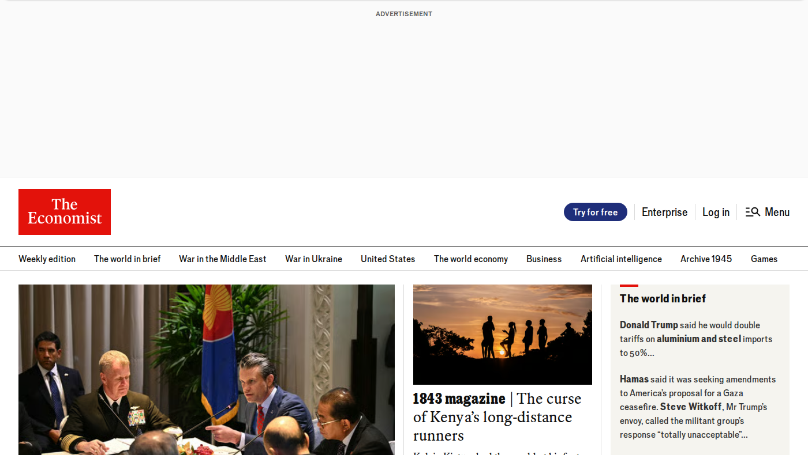
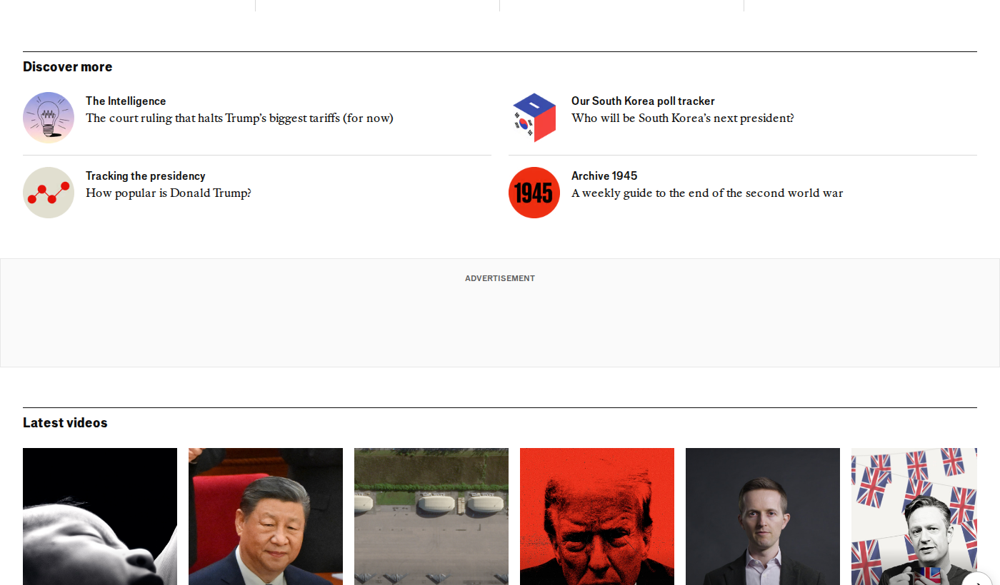
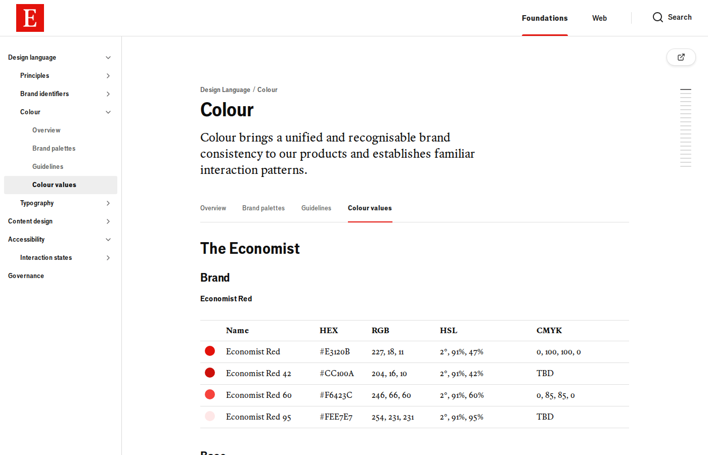
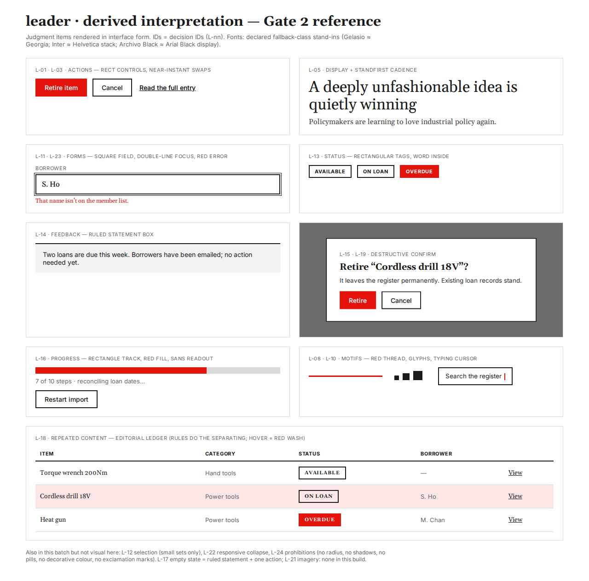

Top: what the source actually looks like (public captures, for review only). Bottom: the derived interpretation of the judgment items (maps to decision IDs in the review page).

economist.com (Wayback 2025-06-01) — masthead & headlines

economist.com (Wayback) — Discover more / videos

Marber design system — colour values (Economist Red tokens)
